平田本陣記念館で川瀨一絵写真展「へんなお茶会」を見ました。
2024/09/01
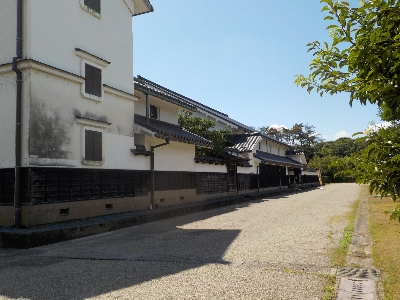
無料の写真展だったので、気軽に行きました。
普通よく見るような景色とか家族の写真とかでした。
身近なものってあまり気にしないですが、どんどん変わっていきますよね。記念じゃないけど、何かあったら写真にしたいと思いました。
今までも身近なものの写真を撮ろうとは思っていたんですが、実際に撮ってないです。今後は月に1枚くらいは撮りたいです。
そして撮った写真は見るようにしたいです。
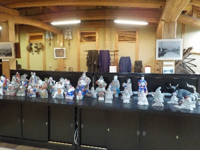
本陣2Fの民芸展示室です。こちらも無料です。
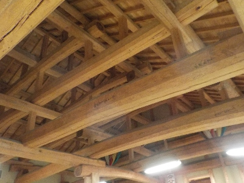
立派な天井の梁が近くで見れます。
平田本陣記念館で植田英夫写真展を見ました。
2021/01/30
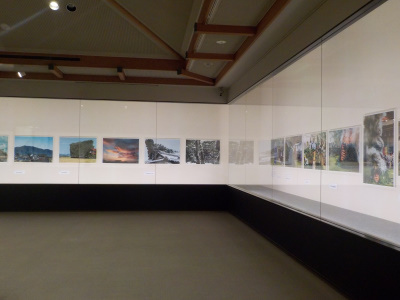
「平田本陣記念館 -悠久の流れ 雲州平田- 植田英夫写真展」を見に行きました。
この写真展は撮影OKと表示があったので写真を撮りました。
写真は思い出になっていいですね。
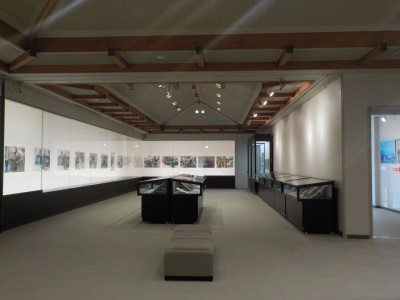
地元の風景や、神事の写真が展示してありました。
動画もいいですが、写真の瞬間を見るのもいいですね。
ドキュメンタリーなものを記録して残すことは素晴らしいことだなと思いながら見ました。
写真で見たお祭りは、実際に行って本物を見てみたいと思いました。
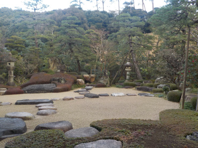
外に出てお庭も見ました。部屋に上がってのんびり見るのがいいですが、コロナの影響で下駄箱が使用禁止となっていたので上がるのは遠慮しました。
企画展以外にも部屋が多くあるので、除菌作業や換気が大変そうですね。
平田本陣記念館で池田あきこ原画展を見ました。
2016/07/09
ダヤンの原画鑑賞と、池田あきこさんのサインを貰いに平田本陣に行きました。
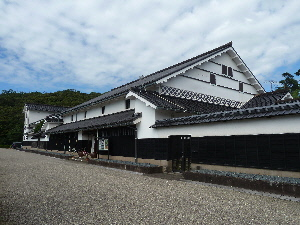
ダヤンは可愛くていいですね。
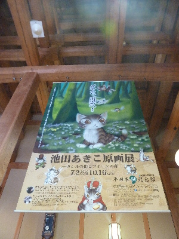
せっかく本陣に来たので、お庭も見ました。
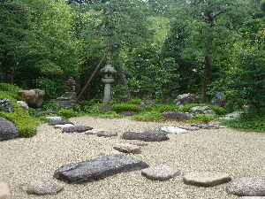
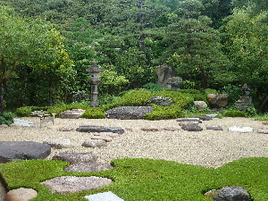
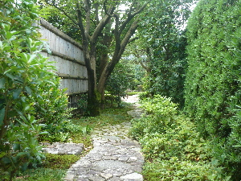
お庭の緑を見て、少しのんびりできました。
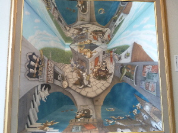
この鏡を使った展示物は撮影Okなので記念に撮りました。
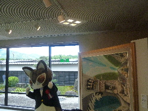
今日は作者がいらっしゃる記念の日なので、ダヤン君も登場です。
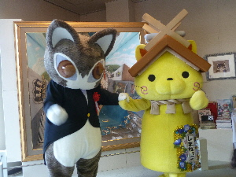
しまねっこも登場しました。
その後、池田あきこさんのギャラリートークとサイン会に参加しました。
本人に会って、話が聞けるなんて最高ですね。
とってもいい経験が出来ました。
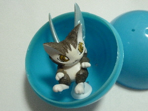
本陣にダヤンのガチャガチャがあったので回してみました。
なかなか可愛くて いい商品ですね。
大事に飾ろうと思います。
ゲゲゲの妖怪美術館
2010/5/2
平田本陣記念館で開催されている「ゲゲゲの妖怪美術館 ～水木しげるの愛しき妖怪達～」展を見ました。
サンレイクフェスティバルもらった割引券を使いました。
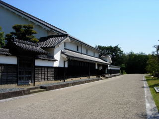
ここの建物は立派ですね。
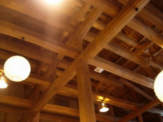
入り口の天井の写真です。建物を見るのもいいですよ。
ゲゲゲっていうと鬼太郎なのでアニメを想像するんですが、アニメのセル画展のようなものではなく、妖怪が描かれている絵や、漫画が展示されていました。
日本各地の妖怪の絵がありました。中国地方の妖怪も別に紹介されていたんですが、
知ってる場所に妖怪がいるとなんだか嬉しいですね。
細かくて丁寧な絵が多かったです。
小さい時に何かで見たことがある絵があり、何か懐かしい気分がしました。
覚えてるもんですね。
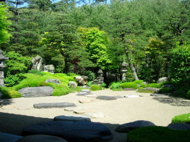
お庭を見て、のんびりくつろいで帰りました。
平田本陣記念館の長新太展
2006/9/17
毎年夏になると平田本陣では絵本関係の展示があるんですが、今年は長新太展でした。
私は全然「長新太」さんて知らなかったので、見ててとっても新鮮でした。
広告には「ナンセンス絵本の王様」なんて書いてあったんですが、正にその通りで、なんと言っていいかわからない不思議な感じの絵とストーリが沢山展示してありました。
インパクトは凄くあるんですが、子供の本て大人にはちょっと見辛いなーってのが正直な感想です。
平田本陣の小村大雲&落合朗風展
2006/6/25
平田本陣って言うと小村大雲のイメージが強いんですけど、今まで小村大雲の作品を見に行ったことがなかったので、この機会に見に行きました。
動物の絵が多くあったんですけど、その動物らしい雰囲気があって、綺麗な絵が印象に残りました。
写真みたいに毛の１本１本までが細かくて綺麗っていう作品ではなく、パッと見がとっとも綺麗にまとまってて、見入っちゃうような作品でした。凄い緻密な絵です。
バックグラウンドがどうのとかなしで、純粋にいい絵で、また機会があったら見たいなって思いました。こうゆう絵が後世まで残るんだろうなー。
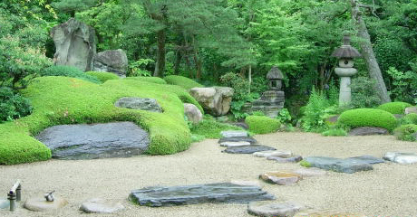
今日は雨でしたが、お庭の緑が綺麗でした。
黒井健絵本原画展
2005/8/7
今日は平田本陣記念館で、黒井健さんのサイン会があったので行って来ました。
「ごんぎつね」の絵が代表的なんですけど、やわらかい感じの綺麗な絵で、絵本にとっても合っていて私は好きです。やっぱり絵本は可愛くて綺麗な絵がいいですよね。
そんな絵が90点もあったのでとっても見ごたえがありました。
絵本の原画がまるまる文章付きで展示してあったので、ストーリーを読んで楽しみながら原画を見れたので面白かったです。
毎年夏休みになると、平田本陣では絵本作家の方がいらっしゃってサイン会があるので楽しみしているんですけど、今年は市町村合併をしたせいかあまり宣伝を見なかった気がします。
そのせいか、お客さんも少なくて寂しい感じでした。
（私は午前中に行きましたが、サイン会の定員80名に対して、半数にも達していませんでした。）
旧出雲市は美術関係の活動をほとんどしていなかったので、そのせいかな～？なんて思ったりしますが、今後の平田本陣がどうなるのかちょっと不安です。
平田本陣記念館の園山幹生展
2005/7/18
園山幹生さんに興味があるわけではないんですが、美術館で絵を見るのが好きなので平田本陣記念館に行って来ました。（ここはのんびり絵が見れるので気にいってます。大きさが丁度いいですね。）
市町村合併をしたせいなんでしょうけど、「平田市立旧本陣記念館」って名前が「出雲市立平田本陣記念館」に変わってました。「旧」の字はなくなったんですね。
あと、本陣の建物のほうは入場料が無料になったため、入り口の様子がちょっと変わってました。
園山幹生展のほうですが、切手や絵付き年賀状の絵に使われてる作品があって、「あー、見たことある。この絵を書いてた人だったんだー。」って感心しながら見てました。
日本画的なものでも洋画的なものでも、色んな作風の作品が沢山あってなかなか面白かったです。なんか同じ人の作品な感じがしませんでした。個人的には洋画風で、水がある風景のものが好きでした。
会場に本人らしき人がいらしゃったんですけど、そんなに絵に詳しいわけでも、特別に園山さんが好きなわけでもないので、話かけるのもなんだし、掛けられても困るので、素人的にはなんかバツがわるかったです。
でも本人に会場で会えるのはちょっと得した気分ですね。（本当に本人かは謎ですけど。）